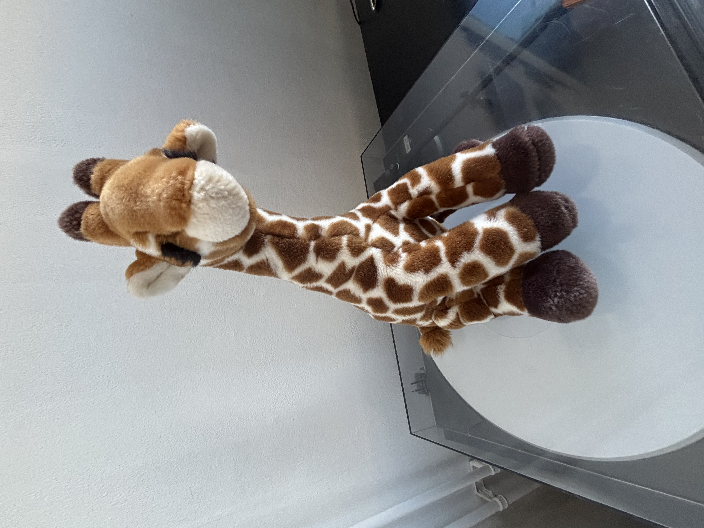

“Haar nek reikt verder dan jouw begrip.”
De meeste mensen herinneren zich hun eerste ontmoeting met Giraffe niet. Dat is normaal. De doctrine leert dat het geheugen zichzelf beschermt tegen dingen die niet volledig begrepen mogen worden.
Toch melden duizenden exact hetzelfde gevoel: het idee dat er iemand achter hen stond, gevolgd door een plotselinge stilte in de kamer.
Wanneer ze zich omdraaiden, zat Giraffe daar al. Wachtend.
Volgens de doctrine bestaat Giraffe buiten normale tijd. Daarom verschijnt zij soms nét iets dichterbij dan je je herinnert.
Volgelingen geloven dat zij zichzelf niet verplaatst. De wereld beweegt simpelweg langzaam richting haar.